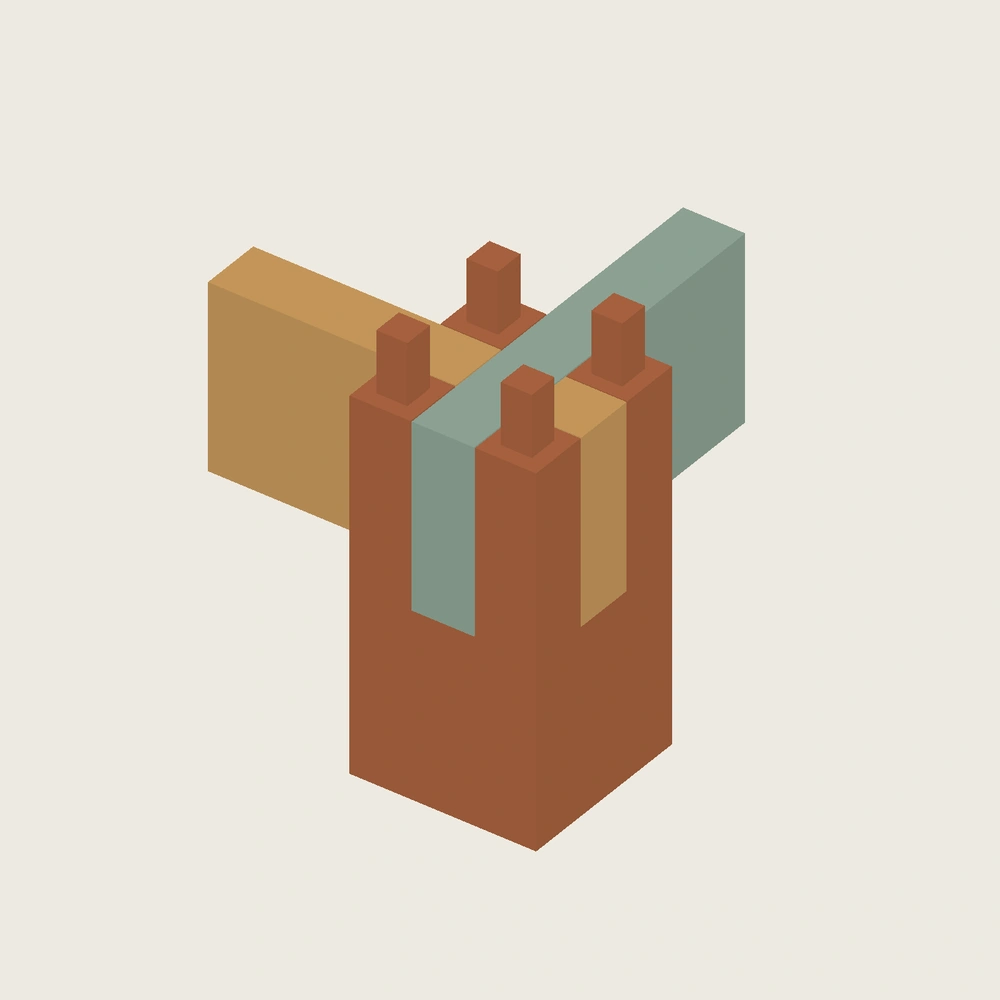
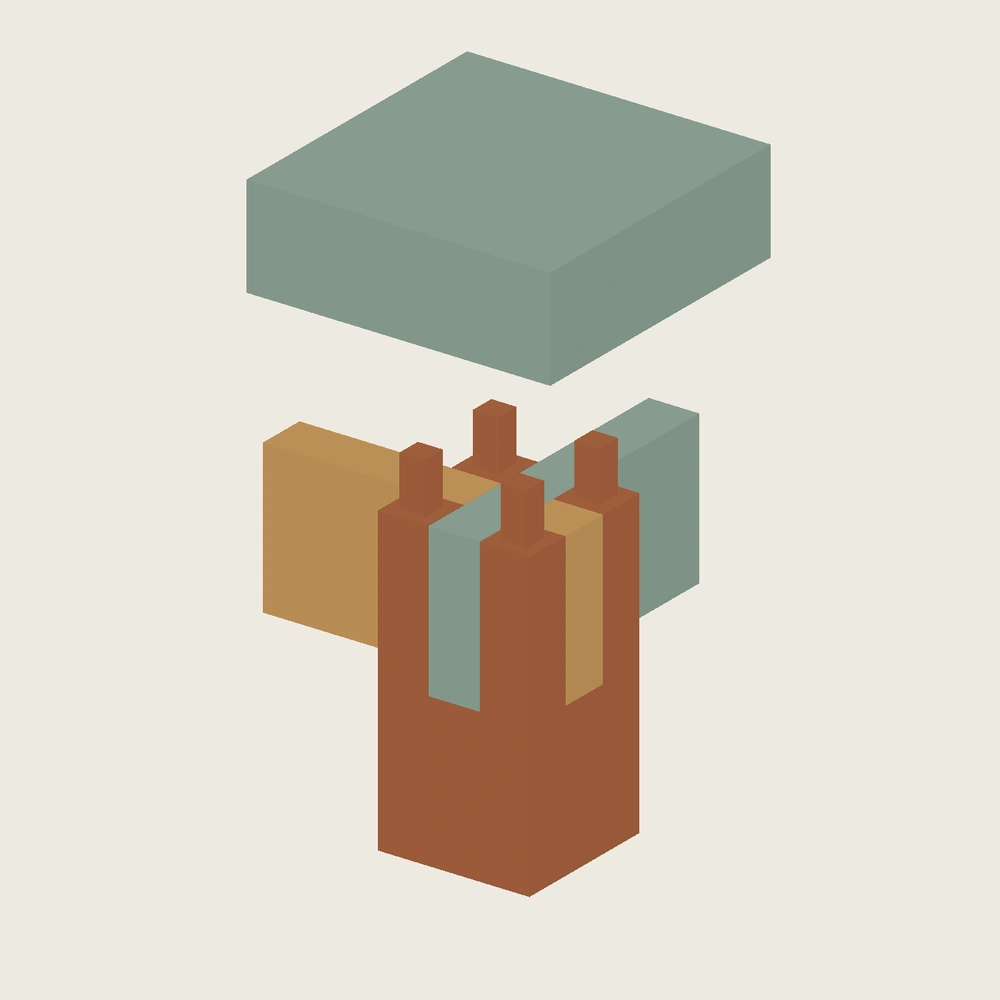

先把制造误差从设计参数中分出来
改变共同母尺寸会让配对零件一起变化，能证明设计联动，却不能代表它们各自加工偏差后的配合。本轮单独改变孔组位置、孔尺寸、腿槽宽和半搭接槽深，让配对件保持不变。
局部试件保留小案原节点的榫根、槽边余料和接口，仅缩短杆件；名义四件实体与冻结整案 STEP 的局部裁取逐一核对一致。局部试件用于观察配合与薄弱位置，不能替代整案四角跨距或整案受力实验。
四件试件，六种原生配置


| 配置 | 独立变化 | 固定终态结果 |
|---|---|---|
| 名义 | 无误差 | 无干涉 |
| 孔位偏移 | 只偏移孔组 | 无干涉 |
| 孔尺寸缩小 | 只缩小孔尺寸 | 无干涉 |
| 两项叠加 | 同样的偏移与缩小同时发生 | 出现干涉 |
| 半搭接浅槽 | 只减小短牙条槽深 | 与长牙条干涉 |
| 半搭接深槽 | 只增大短牙条槽深 | 外肩可到位，但半搭接内部留下空隙 |
这些是用来显露边界的实验配置，不是推荐补偿值。干涉配置属于负对照，不能作为已验证可装配打印包。
局部与整案分开枚举
| 检查范围 | 案例数 | 无体积干涉 | 发现干涉 |
|---|---|---|---|
| 局部：槽宽、孔位、孔尺寸、半搭接槽深 | 81 | 20，其中 10 个仍有内部搭接空隙 | 61 |
| 整案：X 孔组跨距、整体配准、孔尺寸 | 27 | 11 | 16 |
取值是人为选择的有限网格，并没有制造误差的概率分布。20/81 和 11/27 不能称为合格率，也不能推断某台打印机的表现。网格结果只针对固定刚体终态；不将名义母版的路径检查自动推广到其他误差配置。
整案中，孔组跨距误差会使两侧孔分别偏移，整体配准误差又将它们一起移动。二者在某一侧会同向叠加。只检查一个角，或只看平均孔位，可能漏掉另一侧最紧的配合。
证据边界与下一步
- 六份 FreeCAD 原生配置，每份 4 件实体、10 张完全约束草图；独立进程完成六次误差参数修改和恢复，保存字节未改变。
- 六套 STEP 与独立构造相符，24 份 STL 水密且绕向一致；名义四件与原总装局部裁取一致。
- 名义局部试件的三段装入路径另经采样与边界面扫掠检查；其他误差配置不沿用这一通过结论。
下一次实体实验应分别记录插入行程、外肩是否到位、内部搭接空隙及损伤位置。设备、材料、层向与切片条件还未确认，测量记录保持空白；没有推荐力值或承载主张。
本轮未覆盖整案 Y 向联合误差、腿高差、框架扭曲或弹性变形。精确误差值、原生母版、STL 和详细报告只保存在本地；本页只有静态图与摘要，未上传 Onshape。Gate A 与作品级 S2 不宣布通过。